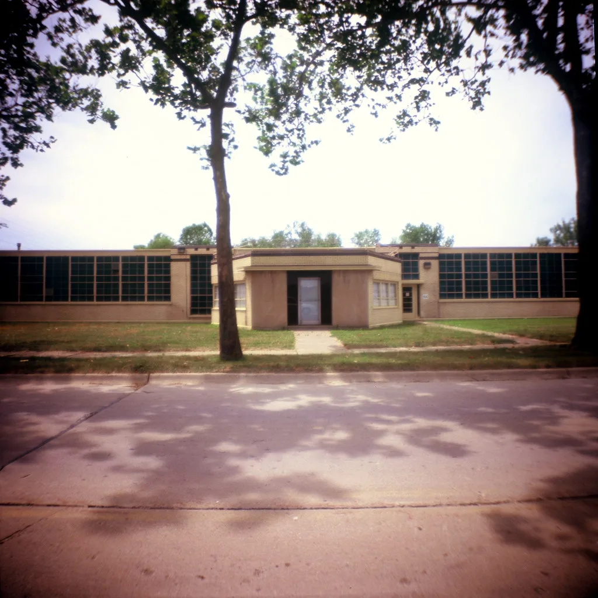
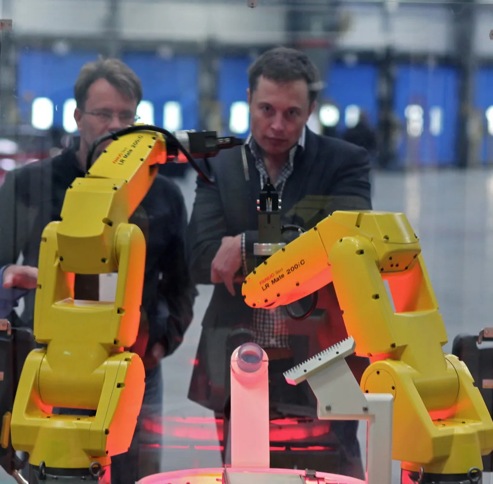

HL만도 하청노동자 장례 62일 만에…유족·사측 극적 합의
지난 7월 자동차 부품업체 HL만도 평택공장에서 작업 중 설비에 끼여 숨진 하청노동자 고 김승모씨(28)의 장례가 사고 발생 62일 만인 22일 치러진다. 유족 측과 사측은 전날 오후부터 밤을 새워 협상을 벌인 끝에 극적으로 합의에 이른 것으로 전해졌다. 노동사회단체들이 모인 '만도 평택공장 청년 비정규직 고 김승모 중대재해대책위원회'는 유족과 사측의 합의 소식을 알리며 두 달 가까이 이어진 대치 국면이 일단락됐다고 밝혔다. 사고 이후 장례조차 미뤄진 채 대치가 이어지면서 노동계 안팎에서는 사태 장기화에 대한 우려의 목소리가 꾸준히 제기돼 왔다.
합의안에는 유족 측이 그동안 요구해 온 사안들이 상당 부분 반영됐다. 정몽원 HL그룹 회장의 조문을 포함한 만도 경영진의 공식 사과, 노조와 함께하는 재발방지 대책 마련, 불법파견 의혹에 대한 수사 적극 협조, 그리고 유가족에 대한 배상 및 보상 등이 합의 내용에 담긴 것으로 파악된다. 20대 초반의 젊은 노동자가 하청업체 소속으로 일하다 숨진 사건인 만큼, 원청의 책임 범위를 어디까지 인정하느냐가 협상의 핵심 쟁점이었던 것으로 알려졌다.

앞서 HL만도는 사고 발생 두 달 만에 "책임을 통감한다"며 공식 사과 입장을 내놓은 바 있다. 회사 측은 안전보건실을 새로 신설하고, 외부 안전 전문기관과 함께 전 사업장에 대한 전수 진단을 매년 실시하겠다고 밝혔다. 또 현장에서 긴급한 안전 개선이 필요할 경우 우선 조치를 취한 뒤 사후에 보고하는 이른바 '선 조치, 후 보고' 체계로 전환하겠다는 계획도 함께 발표했다. 다만 이 같은 대책 발표 직후에는 유족과 대책위 측이 내용이 미흡하다며 반발하는 등 진통이 이어지기도 했다.
사고를 둘러싼 정부 차원의 조사 결과도 이번 합의에 영향을 미친 것으로 보인다. 고용노동부가 HL만도 평택공장과 하청업체 4곳을 대상으로 감독을 벌인 결과, 산업안전보건법 등 관련 법 위반 사항이 138건이나 적발됐다. 이 가운데 86건은 사법처리 대상에 올랐고, 나머지 52건에 대해서는 약 2억8000만원의 과태료가 부과될 예정이다. 원청과 하청업체 모두에서 무더기 법 위반이 확인되면서, 현장 안전관리 체계 전반에 구조적 허점이 있었다는 지적이 나온다.
이번 사고는 젊은 비정규직 노동자가 산업 현장에서 목숨을 잃은 또 하나의 사례로 기록되며, 원·하청 구조 아래 안전관리 책임이 불분명해지는 문제를 다시 한번 환기시켰다는 평가를 받는다. 특히 불법파견 의혹까지 겹쳐 있어, 이번 합의에 담긴 수사 협조 약속이 실제로 어떻게 이행되는지가 향후 진상 규명의 관건이 될 전망이다. 하청업체 소속으로 원청 공장에서 근무하다 사고를 당한 만큼, 실제 지휘·감독 관계가 어떠했는지가 향후 수사의 핵심으로 떠오를 가능성이 크다.

유족 측은 고인의 넋을 기리는 장례 절차를 마친 뒤에도 재발방지 대책의 실질적인 이행 여부를 계속 지켜보겠다는 입장인 것으로 전해졌다. 노동계에서는 이번 사례를 계기로 대기업 원청이 하청 노동자의 산업재해에 대해 지는 책임 범위를 명확히 하는 제도적 논의가 필요하다는 목소리도 함께 나오고 있다.